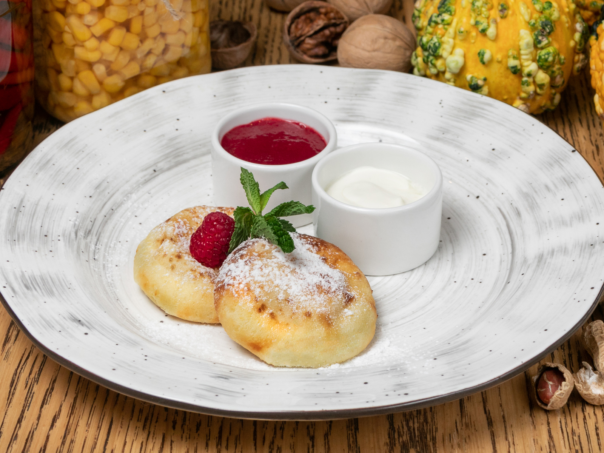

Сырники из творога

Ингредиенты
- Творог - 180 гр
- Мука - 1 столовая ложка (для теста) и 3 столовой ложки (для обсыпки)
- Яйцо - 1 шт
- Сахар - 1 столовая ложка
- Соль - 0,25 чайной ложки
- Масло растительное - 1 столовая ложка
Способ приготовления
Сегодня мы с Вами приготовим сырники, которые можно быстро приготовить на завтрак для своей семьи.
- Смешиваем в миске ингредиенты: творог, яйцо, сахар и соль.
- Затем добавляем муку и также все тщательно перемешиваем.
- Формируем шарики из творожной массы. Чтобы тесто не прилипало к рукам и было удобно катать шарики необходимо смочить руки в воде.
- Обваливаем сырники в муке (мука должна находиться в отдельной миске)
- На разогретую сковороду наливаем растительное масло и выкладываем сырники. Жарим на среднем огне с двух сторон до золотистой корочки.
- Приятного аппетита!

Лучше всего сырники подавать теплыми со сметаной и вишневым вареньем.